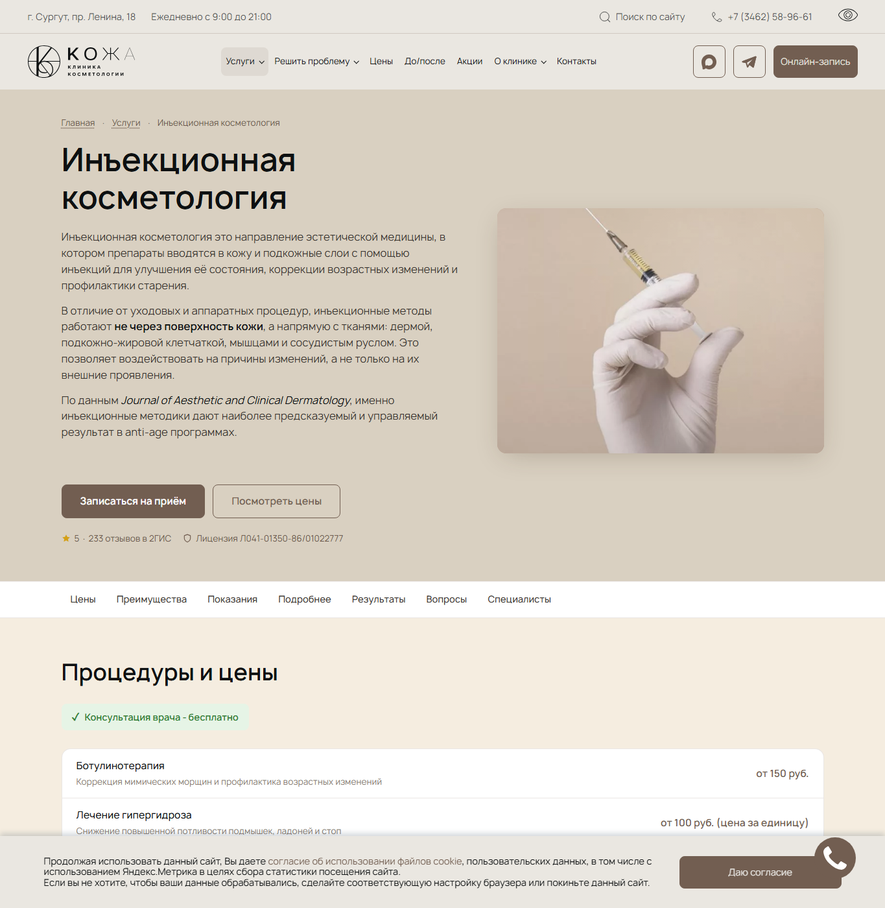
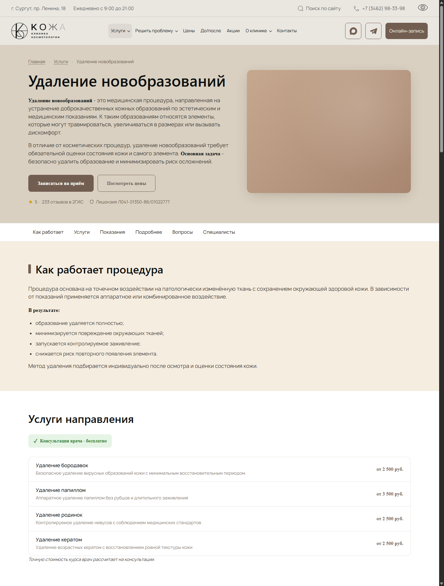

рост поисковых показов за первый месяц
Кейс · медицинская косметология · Сургут
Organic три месяца выше CPC по лидам
Как для клиники «Кожа» связали SEO, медицинский контент, дизайн и аналитику - и какую динамику увидели после запуска работ.
Период кейса: апрель - июль 2026 · источники: GSC, Яндекс Метрика, мониторинг позиций, Calltouch
Поисковые показы
+30%
за первые 30 дней
Organic к CPC
1,67×
по лидам за 3 месяца
больше запросов в Google ТОП-3
преимущество organic над CPC за май - июль
снижение веса ключевых изображений
Реальные выгрузки без прогнозных цифр
Сопоставимые периоды с указанными датами
Относительные метрики без раскрытия объёма бизнеса
01 · Результат
Цифры, которые можно проверить
Для главного сравнения взяли 30 дней непосредственно до старта и первые 30 дней работ. Для позиций и лидов даты указаны отдельно.
Поисковая видимость
Google быстрее расширил охват
+29,8%показы в Google
+11,3%визиты из Google
+6,2%клики из Google
Индекс: период до старта = 100
050100130
ПоказыGSC
ВизитыМетрика · Google
До: 21.03 - 19.04После: 20.04 - 19.05
Позиции Google
Больше запросов дошли до первых трёх мест
73,0%в ТОП-3
+38%
запросов в ТОП-3 на одной отслеживаемой когорте*
27.03 → 30.07Примеры: 16.01 → 30.07
ЗапросПозиция: было и стало
косметология сургут8 → 2
ботокс сургут8 → 1
увеличение губ сургут8 → 2
*233 запроса уже отслеживались в обе даты. Пустые ячейки исключены; «--» считается отсутствием позиции в ТОП-3.
Organic против CPC
Organic опережал CPC три месяца подряд
Индекс: CPC каждого месяца = 100
Май
Июнь
Июль
Суммарно за 3 месяцаorganic = 167 при CPC = 100
CPCOrganic
Метрика файла - «Все лиды»: звонки, формы, callback и чаты. Это не отдельный отчёт только по звонкам.
02 · Что сделали
Собрали систему, а не набор SEO-правок
Каждый слой поддерживает следующий: техническая база помогает поиску, контент отвечает на вопросы пациента, интерфейс ведёт к цене и записи, аналитика показывает эффект.
Техническая база
Исправили мета-теги, canonical, schema.org, внутренние ссылки, изображения и мобильные ошибки.
- 131 страница в контрольном обходе
- 0 страниц с 4xx/5xx и 0 сирот
Контент услуг
Переписали медицинские тексты простым языком: как работает метод, кому подходит, ограничения, этапы и цены.
- 68 страниц услуг
- около 340 самостоятельных ответов
Путь к решению
Связали проблемы пациента с услугами, ценами и врачами. Добавили навигацию внутри длинных страниц.
- 24 сценария «проблема → решение»
- 2-7 релевантных услуг на странице
Контроль качества
Проверили адаптивность, переполнение, ссылки и выпуск страниц после каждого большого этапа.
- 78 из 78 страниц без mobile-overflow
- 228 из 228 проверок июльского релиза
03 · Старый / новый шаблон
Из текстового полотна - в понятный маршрут
Это разные услуги, поэтому сравниваем не их содержание, а одинаковые узлы шаблона: первый экран, цены, ограничения, этапы и запись.
Быстрее сканироватьЯкоря и чередование фонов отделяют один вопрос от другого.
Выбор понятнееЦены, препараты и сравнение появляются до справочного текста.
Риски не теряютсяПоказания и противопоказания вынесены в заметный блок.
Есть следующий шагРезультаты, специалисты и запись встроены в сценарий страницы.
Вес изображений страницы лицензий−75%838,6 → 208,3 КБ
Mobile Lighthouse*32 → 49лабораторный замер
LCP страницы*7,8 → 4,8 cтот же тестовый сценарий
*Отдельный технический пример: результат страницы лицензий и лабораторного теста, не полевые данные всего сайта.
04 · Реализация
Страница отвечает до того, как пациент позвонит
На каждом уровне есть нужная глубина: краткое объяснение направления, подробная услуга, противопоказания, цены, сравнения и FAQ.


05 · Предварительный взгляд
Что можно усилить у Estee Clinic
Это не полный аудит без доступа к аналитике. Мы посмотрели публичные страницы и выделили 3 точки, которые можно проверить без полного редизайна.
У сайта уже сильная база
177 из 177 URL карты сайта отвечают 200; у услуг и врачей есть медицинская разметка; AI-боты разрешены, опубликованы llms.txt и llms-full.txt.
Сократить путь «задача → цена → запись»
На мобильном первый CTA главной появляется у нижней границы экрана, а прайс занимает около 6039 px и не имеет поиска или быстрых якорей.
ПроблемаРешениеЦенаЗапись
Первый тест: один главный CTA и быстрый подбор по проблеме.
Связать медицинский материал с конкретным врачом
Профили врачей подробные, но часть статей подписана «Команда Estee». Не видны именной рецензент, дата медицинской проверки и связь со страницей специалиста.
Первый тест: врач-рецензент на 5 приоритетных материалах.Сделать каталог услуг устойчивым без JavaScript
В исходном HTML страницы «Направления» виден экран «Загрузка…», но нет ссылок на услуги. Пользователь получает каталог, а поисковый робот или AI может увидеть не всё.
HTML: «Загрузка…»
Нужно: услуги + ссылки сразу
Первый тест: отдать базовый каталог в серверном HTML.
Экспресс-проверка: 4 августа 2026 года · desktop 1440 px и mobile 390 px · без доступа к Метрике Estee Clinic
06 · Методология
Что стоит за процентами
Кейс показывает наблюдаемую динамику и выполненную работу. Он не обещает такой же процент другому проекту.
Google Search Console и Метрика
Сравнение по 30 календарных дней: 21.03-19.04 и 20.04-19.05. Формула: (после - до) / до × 100%. GSC считает клики и показы; Метрика - визиты с атрибуцией «Последний значимый переход, кросс-девайс».
Позиции
Регион Сургут, мобильная выдача. Для ТОП-3 сравнивались 233 запроса, уже находившиеся в мониторинге 27.03 и 30.07. Пустые ячейки исключены; «--» означает, что числовой позиции нет, и считается «не в ТОП-3».
Calltouch
Сумма метрики «Все лиды» по каналам organic и cpc за полные месяцы май, июнь и июль. Для каждого месяца индекс CPC принят за 100, индекс organic рассчитан как organic / CPC × 100. Итоговый индекс 167 рассчитан по сумме трёх месяцев. В выгрузке нет модели атрибуции и отдельной метрики целевых звонков.
Технические показатели
Проверки скорости относятся к указанной странице лицензий и одному лабораторному сценарию. 78 страниц услуг проверены на 320/390/768/1365 px; горизонтальное переполнение не найдено.
Следующий шаг
Для Estee не нужен редизайн ради редизайна
Начнём с аналитики и 5-7 приоритетных страниц. Через 30 дней будет видно, как меняются поисковый охват, переходы и обращения.